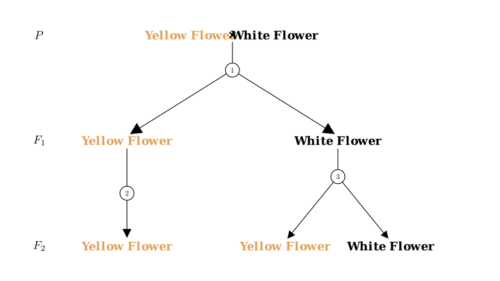
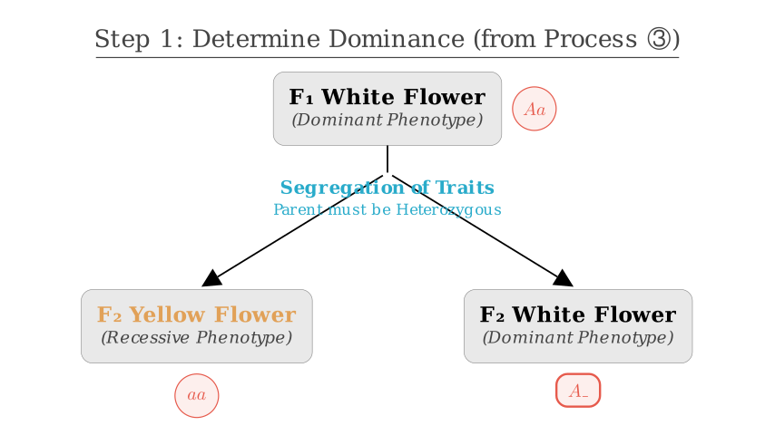
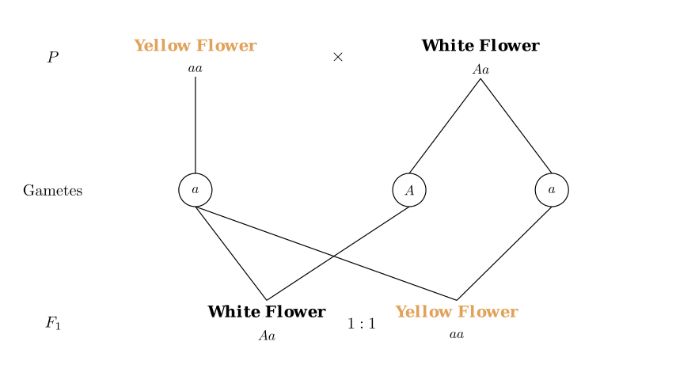
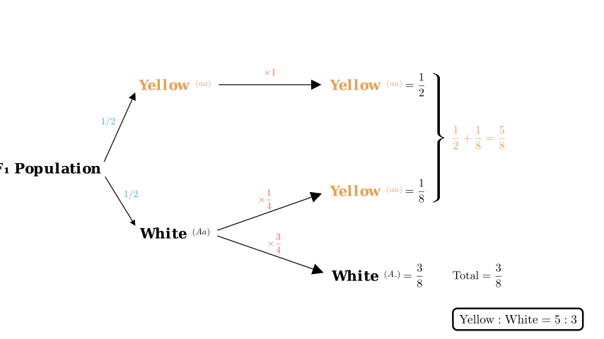

Problem Statement: Pumpkin flower color is controlled by a pair of alleles. The relevant hybridization experiment and results are shown in the figure. Which of the following statements is incorrect?
A. The phenotype and ratio of $F_1$ can verify the law of gene segregation. B. From process ③, it is known that white is the dominant trait. C. The ratio of yellow flowers to white flowers in $F_2$ is $5:3$. D. The genotypes of white flower individuals in $F_1$ and $F_2$ are the same.
Solution Approach: We will analyze the genetic diagram to determine the dominant trait and the genotypes of the parents and offspring. Then, we will calculate the phenotypic ratios in the $F_1$ and $F_2$ generations to evaluate each option.

Step 1: Determine Dominance (Evaluating Option B)
Let's look at process ③. In this step, the $F_1$ White Flower produces offspring that are both Yellow and White.
Statement B is correct.

Step 2: Determine Parental and $F_1$ Genotypes (Evaluating Option A)
Since Yellow is recessive ($aa$), the P generation Yellow Flower must be $aa$. The $F_1$ generation contains Yellow flowers ($aa$). For an offspring to be $aa$, it must receive one $a$ allele from each parent. - P Yellow parent ($aa$) provides one $a$. - P White parent must therefore provide the other $a$. Thus, the P White parent is heterozygous ($Aa$).
The Cross: P ($aa \times Aa$) $\rightarrow$ $F_1$ ($1 aa : 1 Aa$).
This is a Test Cross. The results show a $1:1$ ratio of phenotypes (Yellow : White). This $1:1$ ratio directly reflects the $1:1$ ratio of gametes ($a$ and $A$) produced by the heterozygous parent, thereby verifying the Law of Segregation.
Statement A is correct.

Step 3: Calculate $F_2$ Ratios (Evaluating Option C)
The diagram implies self-pollination (or mating within the same phenotype) for the $F_1$ generation:
Contribution to $F_2$ Yellow: $1/2 \times 1 = 1/2$.
$F_1$ White ($Aa$): Heterozygous self-crossing ($Aa \times Aa$).
Total $F_2$ Ratios: - Total Yellow = $1/2$ (from yellow parent) + $1/8$ (from white parent) = $4/8 + 1/8 = 5/8$. - Total White = $3/8$ (from white parent). - Ratio Yellow : White = $5/8 : 3/8$ = $5 : 3$.
Statement C is correct.

Step 4: Compare Genotypes (Evaluating Option D)
$F_1$ White individuals: We established these come from the cross $aa \times Aa$. Therefore, all $F_1$ White individuals are heterozygous ($Aa$).
$F_2$ White individuals: These are produced by the selfing of $F_1$ White ($Aa \times Aa$). According to Mendelian ratios, the White offspring consists of:
The $F_1$ White flowers are exclusively $Aa$, while the $F_2$ White flowers are a mixture of $AA$ and $Aa$. Their genotypes are not the same.
Statement D is incorrect.
Conclusion: The incorrect statement is D.